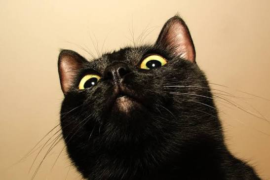

I was born and raised in Auckland. My family are from the Far North of New Zealand.
I am 31 years old and originally I was trained to make Special FX for film and television,
but I didn't like being on my computer all day...so I trained in Practical Special FX and learnt
how to make prosthetics.
I worked on Power Rangers, NZ Short films and personal projects for a few years before COVID.
Then I trained up to be a teacher!
Welcome to New Zealand and Digital Technology! :)
